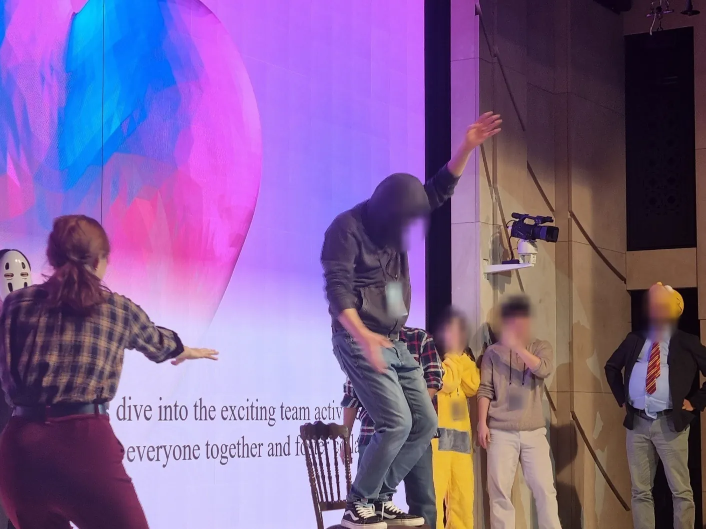
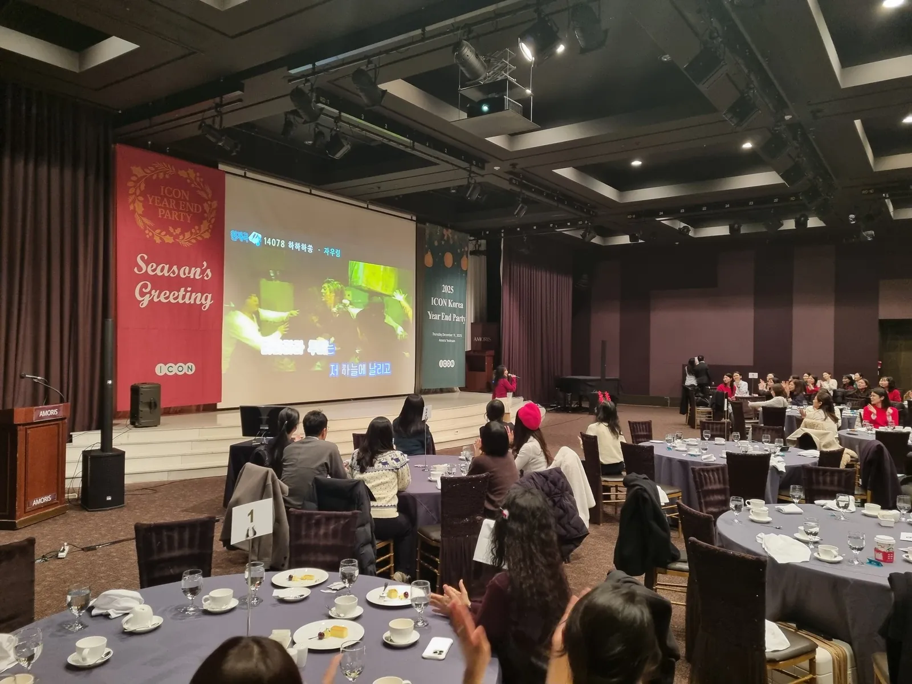

영어 MC 섭외에서 가장 먼저 정할 것은 진행자가 아니라 「진행 언어 비율」입니다. 참석자 대부분이 외국인이면 영어로만, 한국인과 외국인이 섞여 있으면 한국어 · 영어 동시 진행이 맞고, 그 비율에 따라 필요한 진행자가 달라집니다. 이벤투스는 영어 전문 사회자가 프로그램 전체를 영어로 진행하고, 한국어 · 영어 동시 진행도 합니다. 진행 언어와 진행자를 고르는 순서를 정리했습니다.

- 참석자의 국적 구성과 한국어 가능 여부를 보면 영어 단독 진행과 한영 동시 진행 중 무엇이 맞는지 정해집니다.
- 한영 동시 진행은 모든 말을 두 번 하는 것이 아니라, 규칙 · 안내는 두 언어로, 분위기 멘트는 한 언어로 나누는 방식입니다.
- 공식 행사 · 세미나는 격식 있는 톤, 송년회 · 팀빌딩은 소통형 톤 — 행사 성격에 맞춰 진행자의 톤을 정합니다.
- 순서표, 연사 · 수상자 이름과 발음, 피해야 할 표현을 미리 넘기면 진행자가 준비할 수 있습니다.
1. 영어 MC 섭외 전에, 진행 언어 비율부터 정합니다
같은 「영어행사」라도 참석자 구성에 따라 진행 방식이 완전히 달라집니다. 외국계 회사 본사 손님이 대부분인 자리와, 한국인 직원 사이에 외국인 동료 몇 명이 함께 앉은 자리는 필요한 진행자가 다릅니다. 아래 표로 먼저 가늠해 보세요.
| 참석자 구성 | 맞는 진행 방식 | 진행자에게 필요한 것 |
|---|---|---|
| 외국인이 대부분 | 영어 단독 진행 | 영어로만 전체 순서를 끌고 갈 수 있는 진행 능력 |
| 외국인 · 한국인이 비슷하게 | 한영 동시 진행 | 두 언어를 자연스럽게 오가는 진행 |
| 한국인이 대부분, 외국인 일부 | 한국어 위주 + 핵심 안내만 영어 | 중요한 안내를 영어로 짧게 정리하는 능력 |
| 아직 모름 | 사전 미팅 후 결정 | 참석자 명단 · 국적 확인 |
2. 한영 동시 진행, 모든 말을 두 번 하지 않습니다
한영 동시 진행을 「모든 말을 영어 한 번, 한국어 한 번」으로 생각하면 행사 시간이 두 배가 됩니다. 실제로는 말의 종류에 따라 언어를 나눕니다. 놓치면 안 되는 안내는 두 언어로, 분위기를 띄우는 짧은 말은 한 언어로 하고 표정과 동작으로 함께 전달합니다.
| 말의 종류 | 언어 | 이유 |
|---|---|---|
| 게임 규칙 · 이동 안내 | 영어 · 한국어 둘 다 | 놓치면 참여가 끊깁니다 |
| 행운권 번호 · 수상자 발표 | 영어 · 한국어 둘 다, 화면에도 | 모두가 귀를 기울이는 순간입니다 |
| 분위기 멘트 · 호응 유도 | 한 언어로 짧게 | 두 번 하면 흐름이 끊깁니다 |
| 대표 인사 · 연설 | 통역을 할지 미리 결정 | 길이가 길어 시간표에 영향이 큽니다 |
3. 행사 성격에 맞는 진행 톤
영어 진행자는 언어만큼 톤이 중요합니다. 격식 있는 VIP 공식 행사 · 세미나 진행과 유쾌한 소통형 사회는 같은 사람이라도 말투와 속도가 다릅니다. 섭외할 때 「어떤 자리인지」를 분명히 알려 주시면 그에 맞춰 톤을 바꿉니다.
- 공식 행사 · 세미나 · 컨퍼런스 — 또렷하고 격식 있게, 순서 안내와 연사 소개 중심. 영어 아나운서 섭외가 맞습니다.
- 송년회 · 파티 — 무대 게임과 시상을 이끄는 소통형 진행. 코스튬 · 장기자랑 소개도 맡습니다.
- 팀빌딩 · 레크레이션 · 체육대회 — 시범과 구호 중심, 참가자 사이를 다니며 이끄는 진행.
- 학교 영어캠프 — 아이들 눈높이의 쉬운 영어, 필요하면 원어민 섭외.

4. 섭외가 정해지면 진행자에게 넘길 자료
영어 진행자가 가장 곤란한 순간은 현장에서 처음 보는 이름을 불러야 할 때입니다. 아래 자료를 행사 며칠 전까지 넘겨 주시면 진행자가 발음과 순서를 미리 익힐 수 있습니다.
| 자료 | 왜 필요한가 |
|---|---|
| 순서표(시간 포함) | 언어 비율과 멘트 길이를 순서마다 맞추려고 |
| 연사 · 수상자 이름, 직함, 발음 | 공식 자리에서 이름을 틀리지 않으려고 |
| 회사 · 행사 이름의 영어 표기 | 화면 · 현수막과 진행 멘트를 맞추려고 |
| 피해야 할 표현 · 주제 | 국적 · 문화 차이로 생길 수 있는 실수를 막으려고 |
| 시상 항목과 상품 | 발표 순서와 멘트를 미리 만들려고 |

5. 영어 MC 섭외 문의하기
외국인 담당자나 본사 팀이 있다면 행사 전에 영어 Zoom 미팅으로 순서와 분위기를 직접 맞출 수 있습니다. 참석자 구성(국적 · 인원 · 한국어 가능 여부)에 맞춰 진행 비율도 이 자리에서 정합니다.
날짜 · 인원 · 장소 · 행사 성격을 예약 · 문의로 남겨 주세요. 문의서에서 진행 언어를 「영어 · 한국어와 영어 동시 · 아직 모르겠어요」 중에 고를 수 있습니다. 진행한 행사는 행사 이야기에서, 송년회 진행 순서는 강남 영어 송년회 글에서 보실 수 있습니다.
자주 묻는 질문
한국어 · 영어 동시 진행이 가능한가요?
가능합니다. 규칙 · 안내처럼 놓치면 안 되는 말은 두 언어로, 분위기 멘트는 한 언어로 나눠 행사 시간이 늘어나지 않게 진행합니다.
영어 아나운서와 영어 MC 는 어떻게 다른가요?
영어 아나운서는 공식 행사 · 세미나 · 컨퍼런스의 격식 있는 진행을, 영어 MC 는 송년회 · 팀빌딩처럼 참가자와 소통하는 진행을 주로 맡습니다. 행사 성격을 알려 주시면 맞는 진행자를 연결합니다.
원어민 진행자도 섭외할 수 있나요?
필요하면 원어민 섭외까지 상담할 수 있습니다.